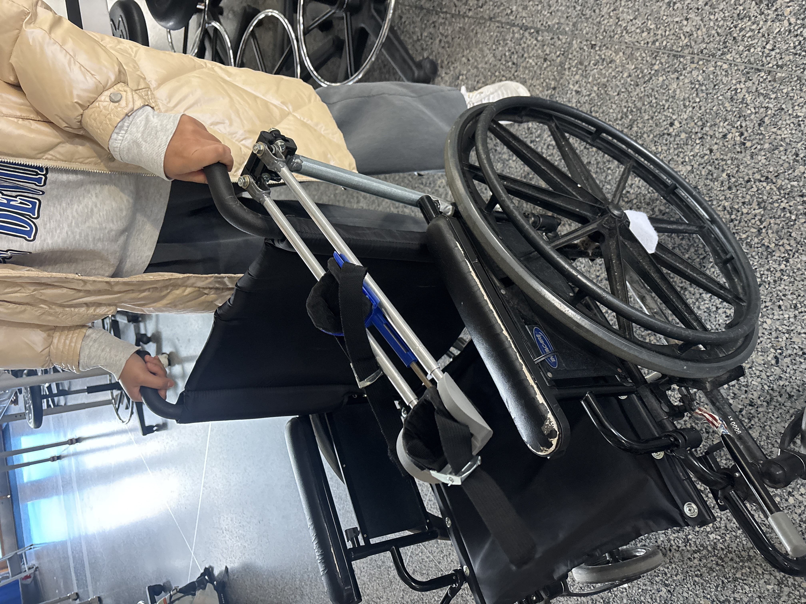
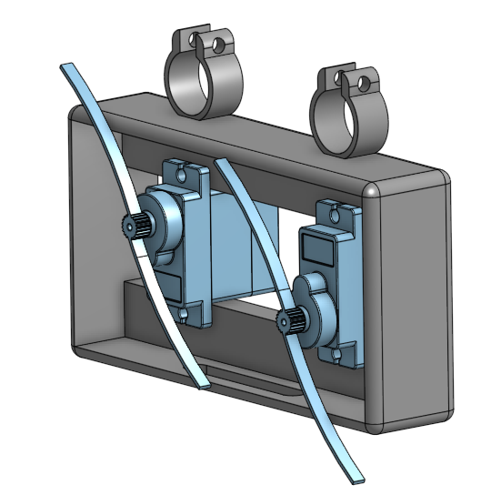
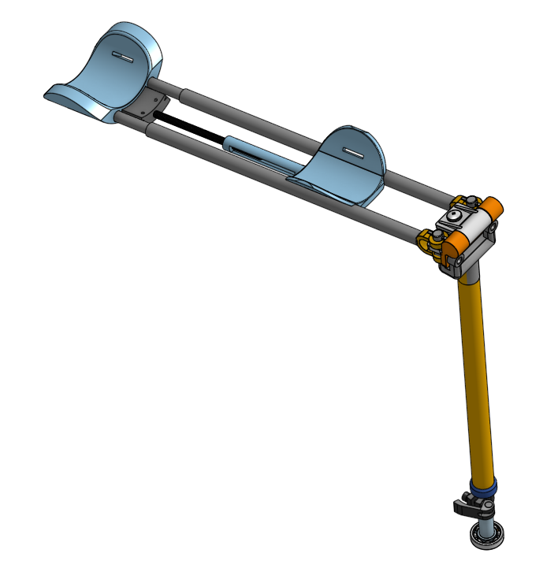
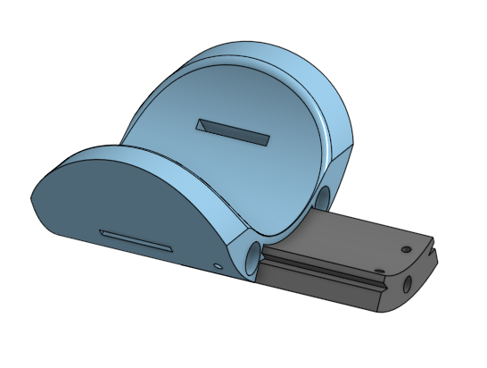
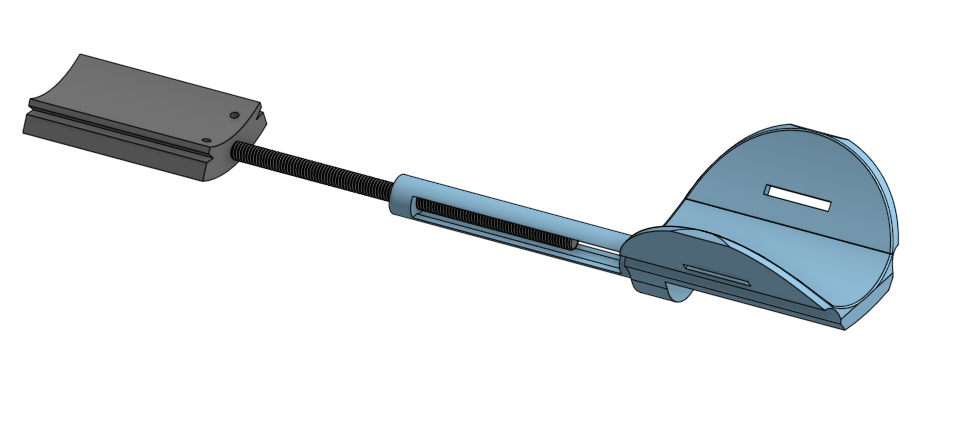

Adaptive Motion Stabilization Device for Spasticity
A client-centered arm-support device combining mechanical stability with servo–IMU-based motion control, designed with a local occupational therapist to help a first-grade student with dystonia participate more independently in hands-on learning.

Designing around a real user
Our team worked with a local occupational therapist to develop an arm-support system for a first-grade student with dystonia. The goal was not simply to restrain unwanted motion; the device needed to provide useful stability while preserving the freedom required for classroom activities and hands-on learning.
That made comfort, adjustability, and controlled motion core engineering requirements alongside the mechanical and electronic performance of the prototype.
Stability without taking away motion
Comfortable arm interfaces
Elbow and forearm supports were designed with dedicated Velcro and padding slots so the device could stabilize the arm without creating hard contact points.
Adaptive friction
A servo housing supported the adaptive friction mechanism, pairing the mechanical structure with IMU-informed motion control.
Adjustable geometry
Telescoping elements, Turnbuckles, and adjustable supports helped the device adapt to the student's position and accommodate growth over time.
Mechanical design lead
I led the rapid prototyping with CAD modeling and 3D-printing effort and designed the forward assembly of the device, while also contributing to electronics integration and the broader mechanical architecture.
Forward assembly
Designed the servo housing, elbow support, forearm support, extending piece, and the turnbuckle-based elbow-to-forearm adjustment.
Motion & adjustability
Supported the development of the major moving subsystems, including bearing-based yaw rotation and telescoping mechanisms for positional adjustment.


Designed to grow with the student
A major part of the design philosophy was avoiding a one-size, one-time solution. I focused on making the structure adjustable so it could continue to fit the student as their body size, seating position, and support needs changed.
The turnbuckle controls the elbow-to-forearm distance, allowing the forearm length of the device to grow with the student. The forearm-support slider independently adjusts how much of the forearm is supported, while the elbow support maintains a consistent interface at the joint. Together, these systems make the arm-support geometry adaptable rather than fixed to a single body size.


From CAD to a working demonstration
The final prototype brought the mechanical support structure and servo–IMU control concept together into a working demonstration. The video below shows the arm-support system in operation alongside the project poster documenting the client need, design decisions, and prototype development process.

What I took away
This project was an early lesson in client-centered engineering: a technically functional mechanism is only useful if it also fits the person, task, and environment it is designed for. Leading the mechanical design strengthened my skills in collaborative engineering, CAD modeling, rapid 3D-printed iteration, and designing around human needs rather than around a mechanism alone.